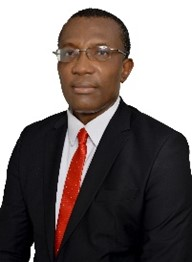

Engr. Chuka Eze holds a Bachelor’s Degree in Electrical Engineering (B.Eng.), from the University of Nigeria,
Nsukka, where graduated as the Best Electrical Engineering graduating student in the 1995 set.
He has over 27 years of hands-on post-graduate experience (locally and internationally) spanning Project Management,
Procurement, Construction, Engineering, Business Development, Operations & Maintenance, and Executive Management.
He started his Oil & Gas career in a Construction Company as an Electrical & Instrumentation (E & I) Engineer, Project
Engineer, Resident Engineer in Germany (Detailed Engineering Design) and the United Kingdom (System Integration),
Project Superintendent and E & I Manager for a total period of ten (10) years where he executed various significant
and complex projects involving offshore and onshore and diligently demonstrated excellence in service delivery.
Chuka further grew and rose through the ranks holding strategic positions for an Engineering and Indigenous EPC company for 14 years as of April 2019 with significant achievements;
Chuka further grew and rose through the ranks holding strategic positions for an Engineering and Indigenous EPC company for 14 years as of April 2019 with significant achievements;
- Engineering Manager
- Projects & Engineering Manager
- Engineering Manager & Acting Marketing Manager
- Marketing & Sales Manager, and Business Manager
- Director Engineering
- General Manager–Asset Management (O & M) at OML 42
- Managing Director